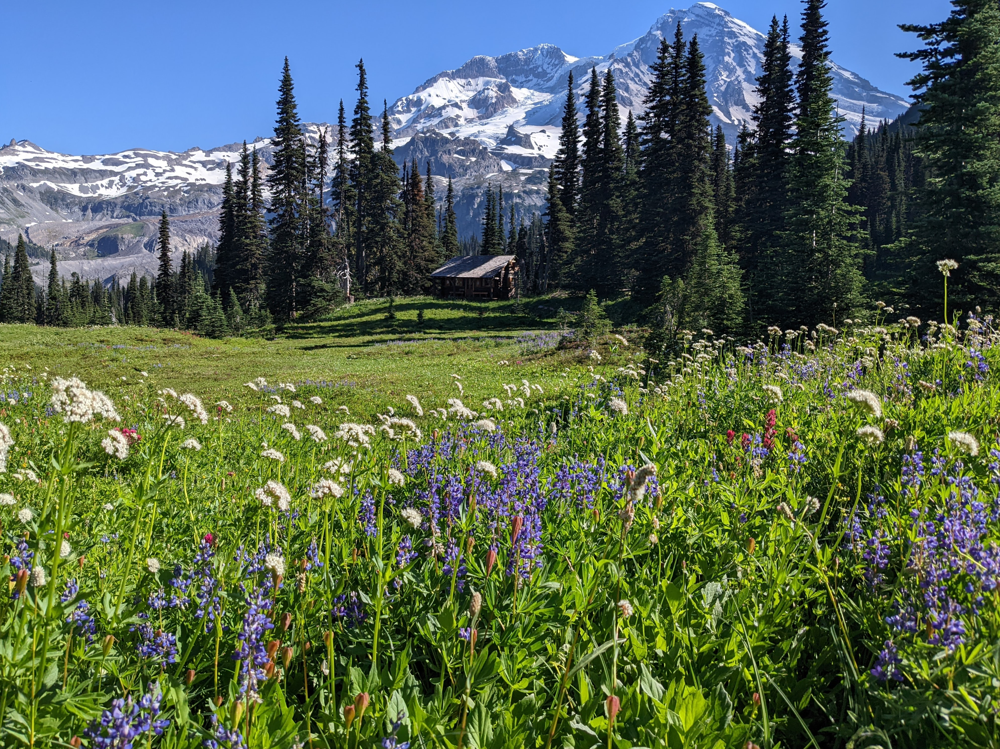

Meadow and cabin
This is a beautiful subalpine meadow with wildflowers blooming.
In the distance, you can see a ranger cabin. Hikers are not allowed to stay here. This spot is so far away from where cars can go that rangers will stay here to keep nearby people safe.
Location: Longmire/Wonderland Trail
Visited: August 6, 2022 at 9:29 AM